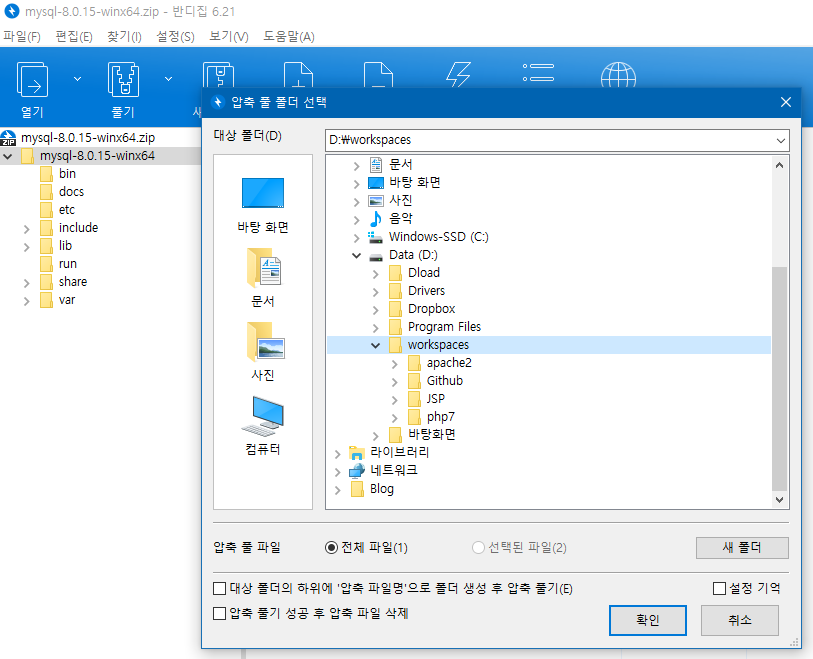

이제 마지막 챕터3입니다!
참고로 이 글의 주제는 단지 Apache웹서버와 php엔진, MySQL데이터베이스서버를 사용하여 각자의 컴퓨터에 APM 환경을 구축하고 서로 연동하는 것까지가 목표입니다!
그럼 이제 바로 MySQL을 설치해보도록 하겠습니다.
(19년 2월 기준 mysql-8.0.15-winx64 released)
일단 다운로드 받았던 압축파일을 마찬가지로 작업영역에 압축을 풀어주겠습니다.

저는 알기 쉽게 mysql8
로 폴더명을 변경해주겠습니다!
압축이 다 풀리면 바로 환경변수를 설정해보겠습니다.

win10 이라면 검색창에 환경
만 입력해도 환경 변수 편집 항목이 표시됩니다!

그 다음 위에서 환경 변수(N)
을 클릭해줍니다.
그리고 이번엔 환경변수에서 변수를 새롭게 정의하여 PATH에 추가해보도록 하겠습니다!
JAVA를 설치해보셨던 분들이라면 무슨말인지 어느정도 짐작이 갈 듯 하네요.
**아래는 예시입니다!


시스템 변수에서 새로 만들기
를 클릭해줍니다.

위 처럼 이름을 입력해줍니다. 변수이름은 누가봐도 알기 쉽게, 누구라도 이해할 수 있게 명명해줘야 하는 센스.
이제 변수를 새로 정의해줬으니 시스템 변수에서 Path
를 찾아 편집을 해줍니다.

제일 아래칸에서 빈 칸을 더블클릭하여 편집상태가 되면 위와같이 %MYSQL_HOME%\bin
을 입력해줍니다.
bin 으로 path 경로를 지정해주는 이유는 bin 폴더안에 그 이유가 있습니다.

bin 폴더안에 우리가 실행할 mysqld.exe 파일이 존재하기 때문에 bin폴더로 경로를 지정해주는 것입니다.
(참고로 원화 표시는 표준 키보드 방식에서 Enter키 위에 있습니다.)
그 다음 관리자 권한으로 명령프롬포트(cmd) 를 실행합니다.win + s : cmd -> 오른쪽마우스 -> 관리자권한으로 실행

이제 설치를 해보도록 하겠습니다.

입력모드에서 mysqld --install
을 해줍니다.
이상없이 설치가 됬고 환경변수가 잘 지정됬다면 위와 같이Service successfully installed.
라는 말이 뜹니다.
그리고! 혹시 아래와 같은 문구가 뜬다면

이미 설치가 된 상태입니다. 그럴 땐 mysqld --remove
를 통해 삭제해주시면 됩니다.
그리고 위 사진과 같이 mysqld --version
을 입력하여
현재 위치에 맞게 설치가 잘 되어있는지 확인 해주세요!
그리고 mysql설치폴더에 들어가서 "data"라는 폴더를 만들어 줍니다.

기존의 버전들은 "my.ini" 라는 설정파일이 존재했었지만 최신버전들은 존재하지 않습니다. 때문에 새롭게 만들어주도록 하겠습니다.
메모장을 열어줍니다.
[mysqld]
basedir = D:/workspaces/mysql8
datadir = D:/workspaces/mysql8/data
port = 3306

위와 같이 입력해줍니다.
참고로 경로는 본인이 mysql을 설치한 경로입니다!
그리고 저장을 해줍니다.
저장할 땐 mysql8 폴더 내 my.ini
, 그리고 파일형식은 모든 파일
,인코딩은 ANSI
로 지정해주시면 됩니다!

190406!!!!!!
경로는 역슬래시(원화표시) 말고 일반 '/'로 경로를 설정하셔야 인식함에 있어 문제가 발생하지 않습니다.
참고로 우리가 설치 이전에 했어야 할 과정을
이제서야 했네요.
결국 설치 과정을 잘못 진행한 것입니다.
다시 cmd를 관리자모드로 실행하겠습니다!
먼저 설치정보를 삭제 하겠습니다.
"mysqld --remove"
그 다음 설정 초기화를 위해
"mysqld --initialize-insecure"
를 입력해줍니다.
그러면 data 폴더에 하나하나 채워지기 시작합니다.
그다음 다시 설치를 합니다.
"mysqld --install"
그리고 win + s : "services.msc" 를 실행해줍니다.
거기서 이름쪽을 한번 클릭하고 키보드로 'M'을 눌러주면
위 사진처럼 MySQL 이 설치된 것을 확인 할 수 있습니다.
그 다음 다시 명령프롬포트에서
"net start mysql" 을 입력해줍니다.
위와 같이 잘 실행되었으면 다시 종료해줍니다.
서버를 종료한 이유는 현재 root 암호가 텅 비어있기 때문입니다.
이제 root 암호를 변경해보도록 하겠습니다.
암호를 지정해주는 파일을 하나 만들어줍니다. ->
참고문서
저는 mysql 작업폴더에 "new_password.txt" 로 만들어 주겠습니다.
ALTER
USER
'root'@'localhost'
IDENTIFIED
BY
'MyNewPass';
내용은 위와같이 한줄만 넣어주고 'MyNewPass' 에 원하는 암호를 넣어줍니다.
다시 cmd 창을 관리자 모드로 열어 특별하게 실행을 해봅니다.
"mysqld --init-file=D:\workspaces\mysql8\new_password.txt"
를 입력하게 되면 커맨드 창에 커서만 깜빡깜빡 하게 됩니다.
(여기서 경로와 파일이름은 각자 다를 수 있습니다.)
그렇게 몇초뒤에 ctrl + c를 눌러 작업을 취소해주고
암호설정파일을 삭제해줍니다.
다시 정상적으로 서버를 실행해줍니다.
"net start mysql"
그리고
"mysql -uroot -p" 를 입력합니다.
이제 우리가 아까 설정한 암호를 그대로 입력하고 엔터를 치게되면
위와 같이 root 계정을 암호를 입력해야만 접속이 가능하게 되었습니다.
그 다음 status를 입력하면
위처럼 값이 나오게 됩니다.
저기 문자셋을 보면 utf8mb4 라고 적혀있습니다.
우리가 알던 utf-8과는 다르게 뭔가 더 길어졌죠?
자세한 내용은
여기 에서 친절하게 설명을 해주셨습니다.
한번쯤은 읽어봐도 좋은 글이라고 생각합니다.
다시 win + s : services.msc 로 들어가볼까요?
이제 실행중임을 알 수 있습니다.
만약 자동으로 DB서버가 실행하는 것을 막으려면 오른쪽마우스를 눌러
속성에서 시작유형을 수동으로 변경해주시기 바랍니다.
이제 우리가 테스트해 볼 계정과 Database를 만들어 보겠습니다.
루트 계정으로 접속을 해줍니다.
Database를 확인하고 mysql database를 사용해줍니다.
'test' 데이터베이스를 만들어줍니다.
사용자계정을 만들어줍니다.
위 형식으로 했을 시 연결테스트 페이지에서 연결이 안되는 현상이 발생했습니다.
아래처럼 ~~ IDENTIFIED WITH mysql_native_password ~~
로 작성해서 계정을 만들어주시기 바랍니다.
CREATE USER 'user'@'localhost' IDENTIFIED WITH mysql_native_password BY '????';
계정에 test Database 권한을 부여합니다.
그리고 동기화 명령어인 FLUSH 를 입력해줍니다.
이제 계정이 만들어졌는지 확인해보겠습니다.
-
계정 로그인
-
SHOW DATABASES;
위와같이 접근권한을 루트계정에서 허용했기 때문에 test db가 보이게 됩니다.
이제 실질적으로 Apache와 연동을 해보겠습니다.
현재 웹서버가 실행중이라면
"httpd -k restart"
서비스가 죽어있다면
"httpd -k start"
를 해주세요!
(안된다면 컴퓨터를 다시시작 후, 환경변수를 한번 확인해주세요)
127.0.0.1 로 접속해줍니다.(IT WORK 페이지)
웹서버가 잘 실행되었는지 확인 후,
127.0.0.1/phpinfo.php로 들어가줍니다.(챕터2에서 만들었던 php의 상세정보출력페이지)
db_conn.php(자유형식) 으로 아래 코드가 담긴 파일을 root directory에 만들어주세요.
저에겐 root directory가 아래 경로입니다.
D:\workspaces\apache2\Apache24\htdocs
<?php
$host
= 'localhost'; :호스트
$user
= 'xxxx'; :이름
$pw
= 'xxxx'; :패스워드
$dbName
= 'xxxx'; :데이터베이스 이름
$conn
= mysqli_connect($host, $user, $pw, $dbName);
if($conn){
echo
"MySQL 접속
성공<br/>";
}else{
echo
"MySQL 접속
실패<br/>";
}
$sql
= "SHOW VARIABLES LIKE
'version'";
$result
= mysqli_query($conn,$sql);
$row
= mysqli_fetch_array($result);
echo
$row["Value"];
?>
이제 모든 과정이 끝났으면 127.0.0.1/db_conn.php로 접속해주세요.
화면에 접속성공, 그리고 mysql 버전이 표시되면 됩니다.
한번 종합적으로 사용을 해보겠습니다.
[MySQL]
차례대로 설명을 해드리겠습니다.
-
'test' database 사용
-
존재하는 테이블 확인하기
-
user 테이블 만들기(자동으로 증가하는 숫자타입의 id와(무조건 값이 들어와야 한다. 빈값은 안됨), 가변형태의 문자열 name, 그리고 id값을
기본키로 사용하겠다는 표시);
-
존재하는 테이블 확인하기
-
'john doe'라는 값을 user테이블의 name 컬럼에 집어넣는다.
-
'jane doe'라는 값을 user테이블의 name 컬럼에 집어넣는다.
-
user테이블의 값을 전부 선택하여 표시한다.
[html]
먼저 우리의 index 페이지를 바꿔보겠습니다.
root directory의 index.html파일을 텍스트에디터로 열어줍니다.
열어주게 되면 위와 같은 형식이 되있습니다.
아래의 코드를 그대로 복사해서 붙여넣기 해주세요!
(index.html)
<html>
<head>
<script>
function
showName(name) {
//showName() 함수 선언 : 파라미터로 name값을 받는다.
let xmlhttp;
//변수 xmlhttp 선언
if (name == "") {
//아래 select 태그에서 option의 value가 텅 비어있을 때
document.getElementById("print").innerHTML = "name print.";
//dom 객체에서 id가 print인 태그의 html코드를 "name print"로 바꿔준다.
return;
//그리고 함수 종료
} else {
//위 조건을 제외하면 전부 이 코드를 실행
if (window.XMLHttpRequest) {
xmlhttp
=new XMLHttpRequest();
}
xmlhttp.onreadystatechange = function() {
if (this.readyState == 4 && this.status == 200) {
document.getElementById("print").innerHTML = this.responseText;
}
};
xmlhttp.open("GET","test.php?name="+name,true);
//데이터 전달 방식중 get방식으로 test.php에 보냄(비동기로)
xmlhttp.send();
}
}
</script>
</head>
<body>
<h1>It works!</h1>
<form>
<select name="user" onchange="showName(this.value)">
<!-- 옵션값이 바뀌게 되면 이벤트 실행(value값을 담아서) -->
<option value="">name</option>
<!-- 텅비어있는 value 값 -->
<option value="john doe">john doe</option>
<!-- value 값이 john doe -->
<option value="jane doe">jane doe</option>
<!-- value 값이 jane doe -->
</select>
</form>
<hr/>
<div id="print">option name print.</div>
<!-- id가 print인 태그 -->
</body>
</html>
같은 위치에 새롭게 파일을 만들어주세요.
(test.php)
<!DOCTYPE html>
<html>
<head>
<style>
table
{
border-collapse: collapse;
width
: 50%;
}
table, td, th {
border: 1px solid black;
padding: 5px;
}
th {text-align: left;}
/* 테이블의 스타일 설정 */
</style>
</head>
<body>
<?php
$name
= $_GET['name'];
// get방식으로 name이란 값이 넘어오면 변수에 담는다.
$conn
= mysqli_connect('localhost','user','test','test');
// mysql db 연결('호스트'.'사용자계정','암호','db명')
if (!$conn) {
die('Could not connect: ' . mysqli_error($conn));
//연결 에러 일때
}
$sql="SELECT * FROM user WHERE name = '".$name."'";
//sql 문으로 "user테이블에서 'name'컬럼값이 '$name인 것을 선택해 가져온다
$result
= mysqli_query($conn,$sql);
//해당 sql을 db에 던져서 돌아온 값이 담긴다
echo
"
<table>
<tr>
<th>id</th>
<th>name</th>
</tr>";
//table 머릿말 설정
while($row = mysqli_fetch_array($result)) {
//결과값이 없을 때 까지 계속 반복(배열형태로 한 행씩 담긴다.row)
echo
"<tr>";
echo
"<td>" . $row['id'] . "</td>";
//넘어온 배열에서 id값을 td에 입력
echo
"<td>" . $row['name'] . "</td>";
//넘어온 배열에서 name값을 td에 입력
echo
"</tr>";
}
echo
"</table>";
mysqli_close($conn);
//mysql db와의 연결 해제
?>
</body>
</html>
아래처럼 인덱스 페이지에 들어가면(127.0.0.1)
javascript 비동기통신(ajax)를 활용해 페이지 이동 없이 php엔진을 활용하여 Database 와 값을 주고 받아 화면에 출력해줍니다.
이상 여기까지 였습니다.
긴말 필요 없네요.
수고링!
그리고 안풀린다거나 궁금한 점, 다른 방식으로 풀었거나 신박한 방법으로 해결하시면
issue 로 글 많이 많이 남겨주세요!
감사합니다^^